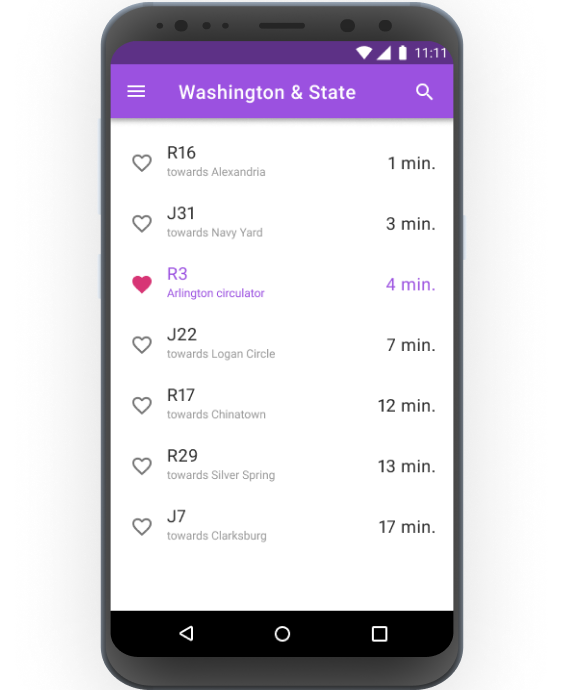

BusyBus
BusyBus is an app concept to improve the current DC Metro and Bus app.

The Problem
While many transit systems have their own apps to help people plan their trips, DC Metro and Bus leaves something to be desired. It doesn’t tell you the rates or the cost of your trip, and users are constantly bombarded with in-app ads.
The Solution
BusyBus can help users plan the best way to commute using DC’s metro and bus system. It shows live estimates for any stop or station, the fastest route to take to get from point A to point B, and lets you reload your SmarTrip card on the go, so you won’t get held up at the fare vending machines.
Research and Discovery
I crafted a survey to discover the motivations and frustrations of my potential users. I needed to find out how often people use public transportation, what kind they used (bus, metro, ridesharing apps), the main annoyances, and what they would primarily use a mobile app for.
Key Takeaways:
- Respondents were most frustrated with unreliability, overcrowding, how long it took, and how expensive it was
- 67% used a mobile app to plan their trips
- Travelers used mobile apps for trip planning (going from Point A to Point B), real-time status updates, and being able to estimate when they should depart/arrive
Competitive Analysis
Although the Washington Metro Area Transit Authority (WMATA) already has a mobile app for its commuters, it is very basic and could be vastly improved upon. Google Maps is much more sleek and robust, but is not tailored for the DC metro system and can’t show alerts or fare estimates. The best way for BusyBus to enter this market would be to alert the user to upcoming and current outages and delays, show fare estimates (since DC’s metro operates on a distance-based fare system), and also be able to reload one’s SmarTrip card via the app, along with basic functionality like accessing routes, stops, and trip planning.
User Stories
User stories help clarify the scope of the app and what the most important functions of the app are. These were from three different perspectives: a new user, a returning user, and all users, and ranked in importance of high, medium, or low.